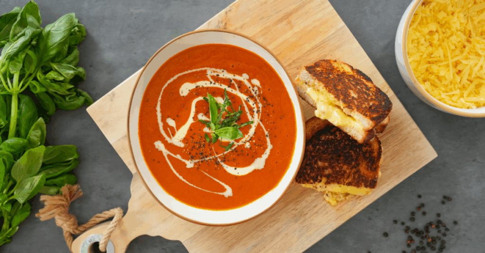

Home
Bacon Pesto Grilled Cheese & Tomato Soup

Description
A rich tomato soup with a golden and buttery grilled cheese with bacon and pesto
Servs 2 People
Ingredients
- 1 tbsp olive oil
- 1/2 a large onion, roughly chopped
- 2 garlic cloves, or the equivalent in jarlic
- 1 tbsp tomato paste
- 1 can of whole peeled tomatoes
- 1 cup of chicken or vegetable stock
- 1/2 tsp sugar
- A few pinches of red pepper flakes
- A few pinches of smoked paprika
- 1/4 cup heavy cream
- Fresh or dried basil to garnish
- 4 slices of sourdough or bread of choice
- A couple cups of any cheese of choice
- Unsalted butter
- Mayonnaise
- Pesto
- Bacon
Steps
- Place bacon on a foil lined sheet pan and bake from a cold oven set at 400 for 20 minutes.
- Heat the olive oil in a saucepan over medium heat, until it behaves like water. Add onion with a pinch of salt and cook until soft and golden (8-10 minutes).
- Add garlic and cook for a minute. Stir in tomato paste and cook for a couple minutes, unitl it darkens in color and develops richness.
- Add can of tomatoes with juice, stock, pepper flakes, and smoked paprika. Simmer uncovered for 20 minutes to reduce and condense flavor.
- While the soup is cooking set out items for grilled cheese, mix together cheeses in a bowl if you have multiple types.
- Transfer soup to a blender. Blend of high until smooth. Return to saucepan, stir in cream, and season with salt and pepper. Keep warm.
- Now for the grilled cheeses, spread butter on one side of each slice of bread. On the other sides spread two slices with mayo and the other two with pesto. Place the bread on a wire rack temperarily.
- In a cold pan place the slices with mayo in the pan butter side down. Turn pan to medium heat. Place 1/2-2/3 cheese on slices. Place bacon on cheese. Top with rest of cheese followed by the other slices pesto side down.
- Let sandwiches cook in pan for a few minutes, pressing down occasionally with spatula. Once the cheese is holding the sandwich together and the bottom is toasted to your liking, flip.
- Let other side of sandwich cook to your liking, remove once finished and place of wire rack
- Serve soup in a bowl, drizzled with a spoonful of cream, and sprinlked with basil.
- Slice grilled cheese in half, plate, and enjoy!